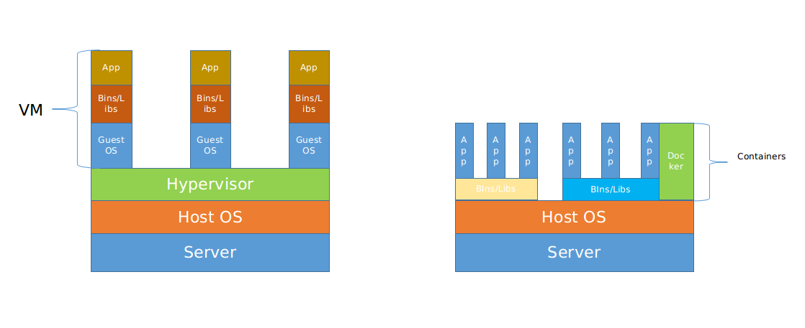

Docker简介
Docker是一个平台，在这个平台上，开发人员和系统管理员可以使用容器的来进行应用的开发、部署以及运行。这种使用Linux容器进行应用部署 的方式称为容器化。Docker出现之前，开发流水线通常依赖于管理软件活动的不同技术组成，如虚拟机、配置管理工具、不同的包关系系统等。所有的这些工具需要特定的工程师进行维护。Docker改变了这种局面，所有的东西通过一个共同的流水线转变成可以在任何目标平台上使用的单一配置。
容器技术流行的原因有以下几个方面：
- 灵活性
- 轻量级
- 可扩展
- 便携性
上述的这些概念或者优点，在随后的文章中都会一一解释，接下来我们先看看Docker中的以下基本概念。
容器VS虚拟机
容器技术在某种程度上与虚拟化技术有点相似，不少人对于这两者的区别不是很清楚。因此，在这里对两者做一些简单的对比介绍，使读者能明确这两种技术上的区别：

从上图中可以大概看出，虚拟机运行于Hypervisor之上，每个虚拟机中单独运行着一个Guest OS。容器技术中，没有Hypervisor这一层，则容器和主机间共享硬件资源及操作系统。容器技术中，系统环境的隔离来自于Namespaces，环境资源的隔离来自于Cgroups，这些在后面文章会有涉及。
Docker一些基本概念
镜像、容器
镜像(image)是文件系统层和一些元数据的集合。我们可以将镜像和容器类比于编程语言中的类和实例的关系，虽然这种类比并不是十分准确，但是这样有助于初步理解这两者之间的关系。
镜像（image）提供了容器运行的初始环境，类似于一个模板，实际运行的容器是以此模板派生出的实例，每个实例的属性不尽相同。可想而知，实例中对于属性的操作，不会对类本身产生变化，这也符合Docker的写时复制（copy-on-write）的机制。即容器的文件变更不会对基础镜像产生影响。
前文中提到，镜像是文件系统层和元数据的集合。文件系统层没有特殊的含义，就是我们常说的文件系统。简单的理解就是一些可执行文件的集合（这里的表述并不准确，但是这个概念不是我们要讨论的重点）。元数据在这里表述的意义通常包括环境变量、端口映射、卷及其他细节内容，后面的文章会详细进行讨论。
Registry
Docker Registry提供了镜像的存储、分发等服务，一个Registry中可以包含多个仓库（Respository）；每个仓库可以包含多个标签（Tag）;每个标签对应一个镜像（每个镜像可以对应多个标签）。
Registry分为公有Registry和私有Registry：
- Registry公开服务是提供给用户、允许用户管理镜像的Registry服务。一般来说，这类公开服务允许用户上传、下载公开的镜像，也有可能包含付费的私有功能。
Docker官方的Docker Hub是最常使用的Registry服务，其他的还有像CoreOS提供的Quay.io，Google的Google Containers Registry等。国内的一些云厂商也提供类似于Docker Hub的公开服务及Docker Hub的镜像服务器（加速器）； - 除了使用公开服务，用户也可以使用
Docker提供的Docker Registry镜像在本地部署自己的私有Registry服务，后续的文章会对这部分内容做出介绍。
以上内容，仅仅是对容器、Docker做出了一个简单的介绍，关于Docker使用的详细介绍，会陆续的进行更新。